Nayoro
Nayoro · Hokkaido
Nayoro
Highlighted on the Hokkaido map.
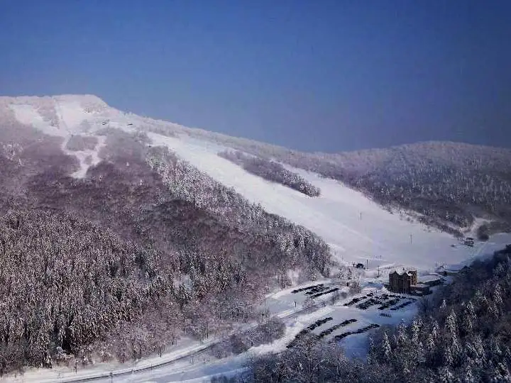
Stay
ニュー富士屋ホテル
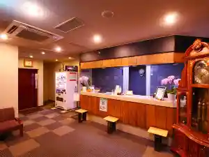
Nyuu Fujiya Hoteru
ホテル バードイン
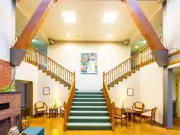
Hoteru Baadoin
二条旅館
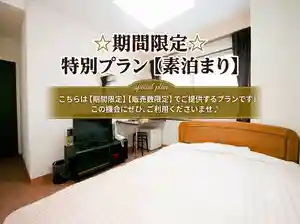
Nijou Ryokan
ホテルマイステイズ名寄
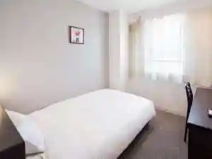
Hoterumaisuteizu Nayoro
ビジネスホテルサンフラワー
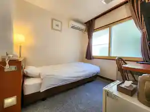
Bijinesuhoterusanfurawaa
グランドホテル藤花
Gurandohoteru Fujika
ゲストハウス日進
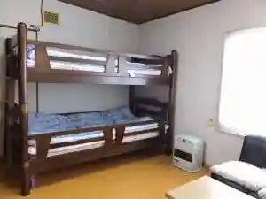
Gesutohausu Nisshin
なよろサンピラーユースホステル
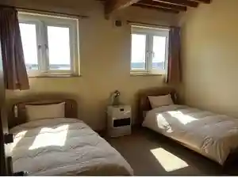
Nayoro Sanpiraayuusuhosuteru
なよろ温泉サンピラー
Nayoro Onsen Sanpiraa
Dining
椿月
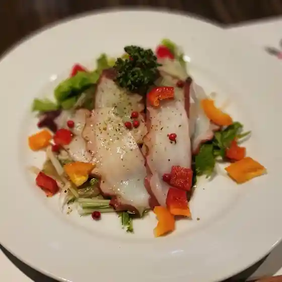
Tsubaki Gatsu
ベーカリー イシダ
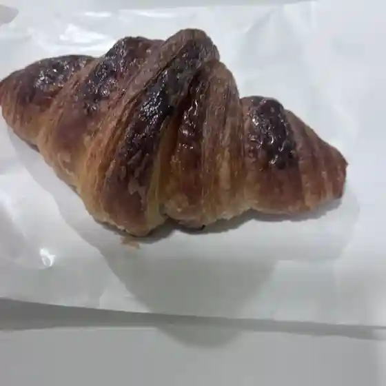
Beekarii Ishida
レストランペリカン
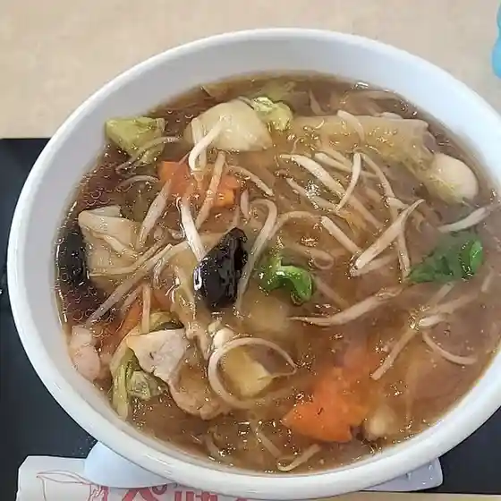
Resutoranperikan
ぷち酒場 もっきり屋

Puchi Sakaba Mokkiri Ya
レフボン 名寄店
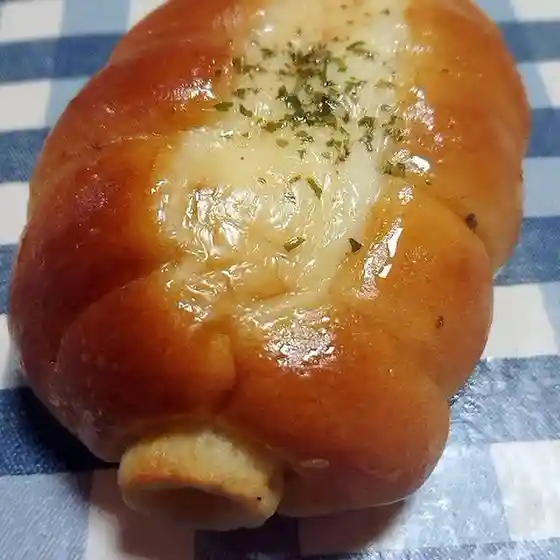
Refubon Nayoro Mise
セブンイレブン 名寄西1条店
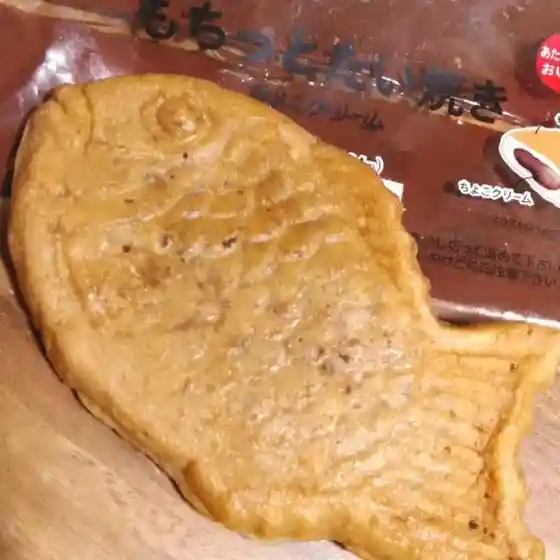
Sebun'Irebun Nayoro Nishi 1 Jou Mise
ほっともっと 名寄店
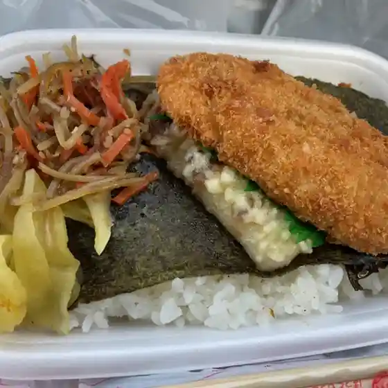
Hottomotto Nayoro Mise
ハートフル・みらい
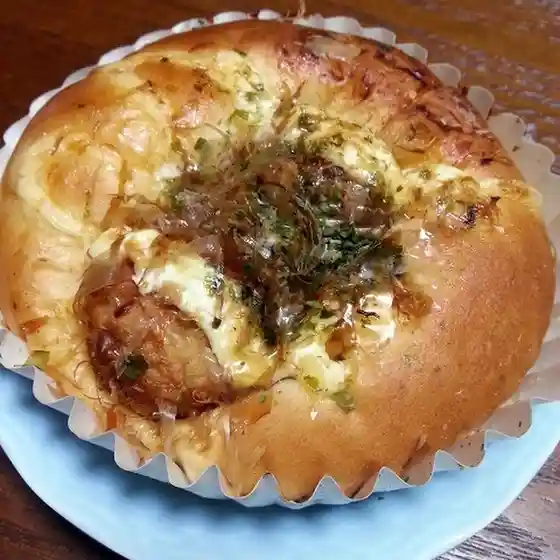
Haatofuru Mirai
Cafe 風夢
Cafe Fuumu
セイコーマート 名寄西10条店
Seikoomaato Nayoro Nishi 10 Jou Mise
天国祭
Tengoku Matsuri
創作料理 しろくろ
Sousaku Ryouri Shirokuro
Take 5
Take 5
カントリーマム イオン名寄店
Kantoriimamu Ion Nayoro Mise
仁兵衛
Jinbee
彩
Sai
食彩酒房毬家
Shokusai Sake Bou Mari Ie
味処 鳥長
Ajidokoro Tori Chou
セイコーマート 名寄中央店
Seikoomaato Nayoro Chuuou Mise
鳥まる
Tori Maru
島ちゃん
Shima Chan
なよろ温泉 サンピラー
Nayoro Onsen Sanpiraa
函館 美鈴珈琲 イオン名寄店
Hakodate Misuzu Koohii Ion Nayoro Mise
焼肉亭
Yakiniku Tei